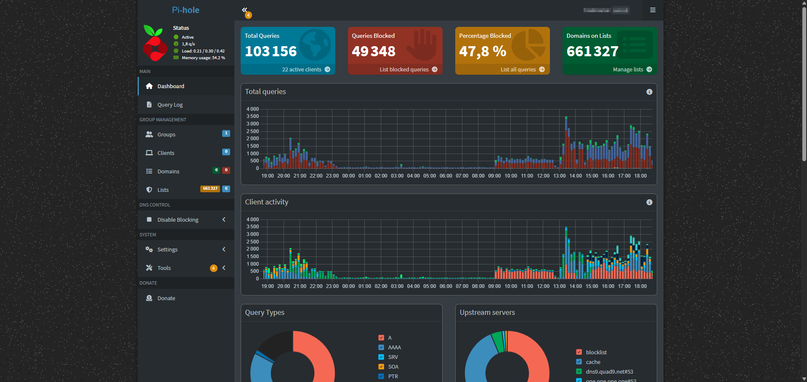
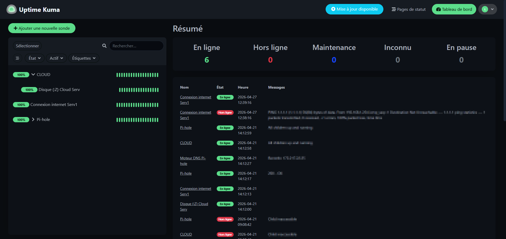
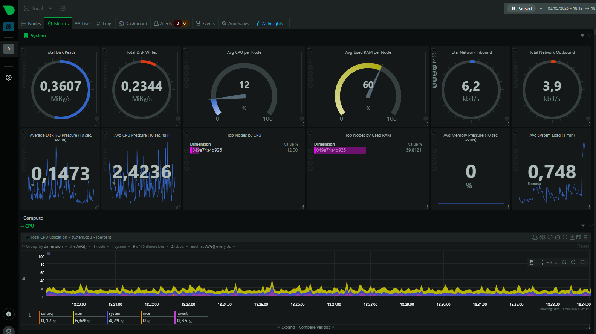
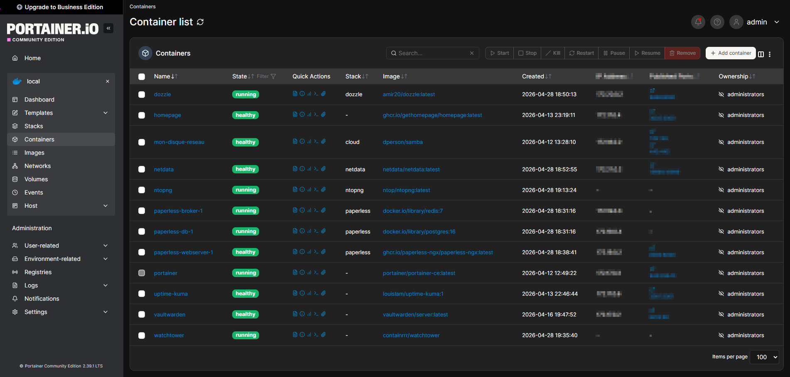
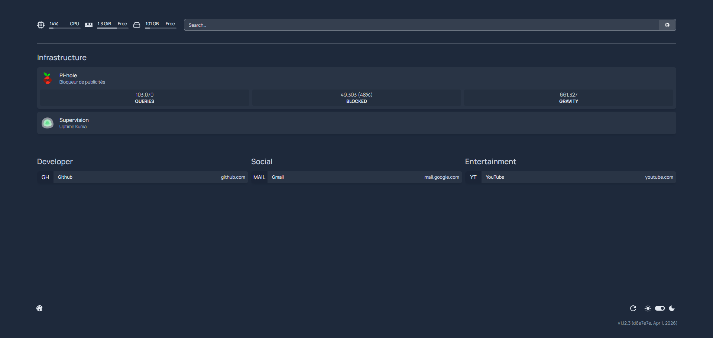

Mon Home Lab
Un serveur physique dédié sous Linux Debian qui héberge une douzaine de services via Docker : DNS, supervision, stockage réseau, sécurité et accès distant. Mon terrain d'expérimentation pour mettre en pratique — et dépasser — le programme du BUT.
Le contexte
Au-delà des cours, j'ai monté ma propre infrastructure pour comprendre concrètement comment fonctionne un réseau de services en production. Chaque brique a été choisie, déployée et configurée par mes soins, puis supervisée pour garantir une disponibilité continue.
C'est au détour de discussions techniques avec des camarades de promotion que j'ai découvert l'univers du Home Lab. J'ai immédiatement été conquis par le concept : posséder mon propre environnement pour expérimenter et casser des choses sans aucune limite. Ce qui a commencé par de la simple curiosité s'est vite transformé en une véritable passion pour l'administration système et réseau.
Aujourd'hui, mon infrastructure repose sur un serveur physique dédié Mini-PC HP, boosté par 3,6 Go de RAM et 200 Go de stockage / avec un disque dur externe de 1To . Sur cette machine, j'ai déployé l'hyperviseur Proxmox, ce qui me permet d'isoler mes environnements virtuels sous Debian et de faire tourner tous mes services vitaux (comme mon résolveur DNS Pi-hole ou ma supervision Uptime Kuma) via Docker.
Serveur Physique — HP ProDesk
Petit PC dédié tournant sous Linux Debian, accessible via SSH. Héberge l'ensemble de l'infrastructure grâce à Docker.
// Topologie Réseau
// Services déployés
Pi-Hole + Unbound
DNS & SécuritéBloqueur de publicités au niveau DNS pour tout le réseau local. Couplé à Unbound comme résolveur récursif local sur le port 5335 — aucune requête DNS ne sort en clair vers des serveurs tiers.
- DNS filtering
- DNS over TLS
- Résolution privée
Portainer
Gestion DockerInterface web de gestion de l'ensemble des conteneurs Docker. Déploiement de stacks via l'éditeur intégré, suivi des volumes, réseaux et logs en temps réel.
- Docker Stacks
- HTTPS (port 9443)
- Container orchestration
Tailscale VPN
Accès distantVPN mesh basé sur WireGuard permettant d'accéder à l'infrastructure depuis n'importe où (4G/5G). Le Pi-Hole est utilisé comme DNS via Tailscale avec l'option Override local DNS.
- WireGuard
- DNS override
- Accès mobile
Samba
Stockage réseauPartage de fichiers réseau monté comme lecteur Z: sous Windows via le protocole SMB. Permet un stockage centralisé accessible depuis tous les postes du LAN.
- SMB/CIFS
- Partage LAN
- Authentification
Vaultwarden
SécuritéAlternative open-source à Bitwarden, auto-hébergée et accessible via HTTPS grâce à Tailscale. Inscriptions désactivées après création du compte — instance sécurisée à usage personnel.
- Bitwarden-compatible
- HTTPS / Tailscale
- Chiffrement E2E
Uptime Kuma
MonitoringSurveillance de la disponibilité de chaque service. Envoie des alertes Discord via Webhook en cas de panne. Tableau de bord avec historique d'uptime et temps de réponse.
- Alerting Discord
- Webhook
- Historique uptime
Netdata
Métriques systèmeTableau de bord temps réel pour surveiller CPU, RAM, température, réseau et stockage. Interface "vaisseau spatial" avec des centaines de métriques collectées à la seconde.
- CPU / RAM / Temp
- Métriques réseau
- Temps réel
Dozzle
LogsVisualisateur de logs Docker en temps réel. Permet de voir les sorties de chaque conteneur sans avoir à utiliser docker logs en CLI. Accès protégé par mot de passe.
- Logs temps réel
- Auth protégée
- Multi-conteneurs
Homepage
Portail d'accueilDashboard centralisé configuré via fichiers .yaml. Agrège les liens vers tous les services du lab avec widgets d'état, météo et informations système.
- Config YAML
- Widgets dynamiques
- Portail centralisé
Paperless-ngx
Gestion documentaireSystème de gestion de documents numérisés avec OCR automatique. Indexe, classe et rend recherchables tous les documents. Stack complète : Redis + PostgreSQL + serveur web.
- OCR automatique
- PostgreSQL
- Redis
ntopng
Analyse réseauAnalyseur de trafic réseau en temps réel. Visualise les flux, identifie les hôtes les plus actifs et détecte les comportements anormaux sur le LAN.
- Deep Packet Inspection
- Analyse de flux
- Temps réel
Watchtower
AutomatisationMet à jour automatiquement les images Docker en production. Surveille le Docker Hub et redémarre les conteneurs avec la dernière version — zéro intervention manuelle.
- Auto-update
- Docker Hub
- Sans interruption
// En production — captures réelles





Compétences mobilisées
Administrer les réseaux : configuration de services réseau (DNS Pi-hole, partage Samba), administration d'un système Linux et supervision continue (Uptime Kuma, Netdata) pour détecter les dysfonctionnements.
Connecter les usagers : mise en place d'un accès distant sécurisé (Tailscale / WireGuard) et analyse du trafic réseau (ntopng) pour observer les flux.
Créer des outils : déploiement et orchestration de conteneurs Docker (Portainer), configuration de dashboards (Homepage en YAML), gestion de données (Paperless : PostgreSQL + Redis) et automatisation (Watchtower).